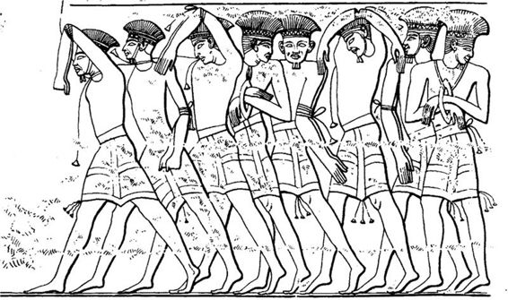
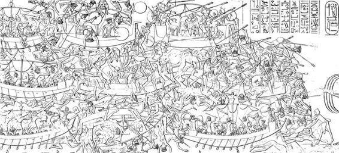
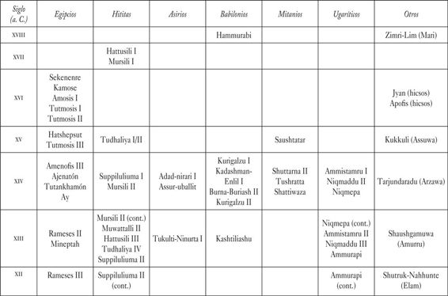
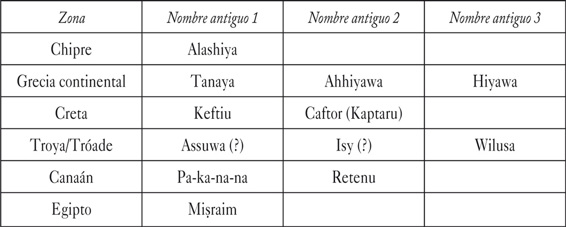

Los guerreros entraron en la escena mundial y se movieron con rapidez, dejando a su paso una estela de muerte y destrucción. Los investigadores modernos se refieren a ellos como un colectivo al que denominan «Pueblos del Mar», pero los egipcios que dejaron constancia de su ataque contra Egipto jamás utilizaron este término. Por el contrario, los identificaron como grupos separados que actuaban de forma conjunta: los peleset, tjekker, shekelesh, shardana, danuna y weshesh; nombres extraños al oído para gentes de apariencia extranjera.[1]
Tenemos poca información sobre ellos, aparte de la que nos proporcionan los documentos egipcios. No sabemos con seguridad dónde aparecieron los Pueblos del Mar: quizá fuera en Sicilia, Cerdeña e Italia, según una de las hipótesis; tal vez en el Egeo o en la Anatolia occidental; o quizá incluso en Chipre o el Mediterráneo oriental.[2] Nunca se ha identificado un yacimiento antiguo como punto de origen o de partida. Creemos que pasaban sin cesar de un sitio a otro, invadiendo países y reinos en su avance. Según los textos egipcios, establecieron un asentamiento en Siria antes de bajar por la costa de Canaán (incluidas partes de los actuales Líbano, Siria e Israel) hasta entrar por el delta del Nilo en Egipto.

Fig. 1. Pueblos del Mar retratados como cautivos en Medinet Habu (según Medinet Habu, vol. 1, lám. 44; cortesía del Oriental Institute de la Universidad de Chicago).
Corría el año 1177 a. C. Era el octavo del reinado del faraón Rameses III.[3] Según los antiguos egipcios y las pruebas arqueológicas más recientes, una parte de los Pueblos del Mar llegó por tierra, y la otra, por mar.[4] No llevaban uniformes ni equipos relucientes. Las imágenes antiguas representan a un grupo con tocados de plumas, mientras otra facción lucía casquetes; los había que usaban cascos con cuernos o que llevaban la cabeza desnuda. Algunos tenían barbas cortas puntiagudas y vestían faldas cortas a la escocesa, ya fuera a pecho descubierto o cubiertos con una túnica; otros iban afeitados y llevaban prendas más largas, casi como faldas de mujer. Estas observaciones hacen pensar que los Pueblos del Mar los formaban gentes de distintas geografías y distintas culturas. Armados con afiladas espadas de bronce, lanzas de madera con relucientes puntas metálicas, y con arcos y flechas, aparecían en botes, carros de combate, carretas de bueyes u otras variantes de carros. Aunque he tomado la fecha de 1177 a. C. como punto de inflexión fundamental, sabemos que los invasores fueron llegando en oleadas durante un lapso temporal considerablemente largo. En ocasiones, los guerreros se presentaban en solitario y otras veces iban acompañados de sus familias.
Según las inscripciones de Rameses, ningún país fue capaz de enfrentarse a esta multitud invasora. La resistencia era en vano. Las grandes potencias de la época —hititas, micénicos, cananeos, chipriotas y algunos otros— fueron cayendo uno tras otro. Algunos supervivientes escaparon de la matanza; otros se apiñaron en sus ciudades, antes prominentes y ahora en ruinas; y los hubo que se unieron a los invasores, engrosando sus filas y sumándose a la aparente complejidad de la turba invasora. Todos los grupos de los Pueblos del Mar estaban en movimiento, al parecer cada uno regido por sus propios intereses. Quizá algunos se sintieron espoleados por el ansia de botín o esclavos; otros quizá emigraron hacia el este, desde sus territorios más occidentales, empujados por presiones demográficas.
En las paredes de su templo funerario de Medinet Habu, cerca del Valle de los Reyes, Rameses dijo sucintamente:
Los países extranjeros organizaron una conspiración en sus islas. Arremetieron de pronto contra todas las tierras y las dispersaron en el combate. Ninguna tierra fue capaz de resistir frente a sus armas, desde Jatte, Qode, Karkemish, Arzawa y Alashiya, todas aisladas [al mismo tiempo. Establecieron] un campamento en un lugar de Amurru. Devastaron a sus gentes y su tierra quedó como la que no ha llegado a existir. Avanzaban hacia Egipto, con la llama preparada de antemano. Era una confederación de peleset, tjekker, shekelesh, danuna y weshesh, las tierras unidas. Pusieron la mano sobre las tierras del circuito entero de la tierra, con el corazón seguro y confiado.[5]
Tenemos noticia de estos lugares que, supuestamente, conquistaron los invasores, porque eran famosos en la antigüedad. Jatte o Hatti es el territorio hitita, cuyo núcleo se encontraba en la meseta interior de Anatolia (antiguo nombre de Turquía), cerca de la actual Ankara, y su imperio se extendía desde la costa del Egeo en el oeste hasta las tierras del norte de Siria en el este. Qode probablemente estaba en lo que hoy es el sureste de Turquía (quizá en la región de la antigua Kizzuwadna). Carchemish es un yacimiento arqueológico bien conocido, que empezó a ser excavado hace casi un siglo por un equipo de arqueólogos en el que se encontraban sir Leonard Woolley (tal vez más conocido por su excavación el «Ur de los caldeos» de Abraham, en Iraq), y T. E. Lawrence (que, antes de protagonizar sus hazañas de la primera guerra mundial, que acabaron convirtiéndolo en el «Lawrence de Arabia» de Hollywood, se había formado como arqueólogo clásico en Oxford). Arzawa fue un territorio conocido por los hititas, situado dentro de su radio de alcance, en la Anatolia occidental. Alashiya podría haber sido lo que hoy conocemos como la isla de Chipre, una isla rica en metales y famosa por sus minas de cobre. Amurru estaba en la costa del norte de Siria. Volveremos sobre estos lugares más adelante, en las páginas y las narraciones que vienen a continuación.
Los seis grupos independientes que conformaron los Pueblos del Mar durante esta oleada de invasiones —los cinco mencionados por Rameses en la inscripción de Medinet Habu y un sexto grupo, llamado shardana, al que se menciona en otra inscripción importante— son bastante más enigmáticos que las tierras que supuestamente conquistaron. No dejaron ninguna inscripción propia y, por lo tanto, a nivel textual, los conocemos casi exclusivamente a través de las inscripciones egipcias.[6]
También es difícil detectar a la mayoría de estos grupos en el registro arqueológico, aunque arqueólogos y filólogos han realizado un valeroso intento durante buena parte del siglo pasado, primero con juegos lingüísticos y, en años más recientes, estudiando la alfarería y otros restos arqueológicos. Por ejemplo, los danuna fueron identificados, hace tiempo, con los dánaos homéricos, del Egeo de la Edad del Bronce. Abundan las hipótesis que sostienen que los shekelesh llegaron de la actual isla de Sicilia y que los shardana eran de Cerdeña, basándose en parte en las similitudes consonánticas de cada caso y en el hecho adicional de que Rameses se refiere a estos «países extranjeros» como instigadores de una conspiración «en sus islas»; a los shardana, en particular, se los calificó en las inscripciones de Rameses como un pueblo «del mar».[7]
No obstante, no todos los investigadores aceptan estas sugerencias. Existe toda una escuela de pensamiento que propone que los shekelesh y los shardana no llegaron desde el Mediterráneo occidental, sino que provenían de zonas del Mediterráneo oriental y tan solo huyeron a las regiones de Sicilia y Cerdeña, y dieron sus nombres a estas tierras tras haber sido derrotados por los egipcios. A favor de esta posibilidad se presenta el hecho de que sabemos que los shardana habían combatido tanto a favor como en contra de los egipcios mucho antes de la llegada de los Pueblos del Mar. En contra de esta posibilidad tenemos el hecho de que, más adelante, Rameses III nos dice que él hizo asentarse en el propio Egipto a los supervivientes de las fuerzas atacantes.[8]
De todos los grupos extranjeros activos en este escenario durante aquella época, solamente se ha identificado a uno con seguridad. Suele admitirse que los peleset de los Pueblos del Mar no son sino los filisteos, de quienes en la Biblia se dice que provenían de Creta.[9] La identificación lingüística era, en apariencia, tan obvia que Jean-François Champollion, el descifrador de los jeroglíficos egipcios, ya la había sugerido en 1836, y la identificación de estilos específicos de cerámica, arquitectura y otros restos materiales como estilos «filisteos» fue iniciada ya en 1899 por el arqueólogo bíblico que trabajaba en Tell es-Safi, identificada como el Gat bíblico.[10]
Aunque no sabemos con exactitud ni los orígenes ni la motivación de los invasores, sí conocemos su aspecto: podemos ver sus nombres y sus rostros inscritos en los muros del templo funerario de Rameses III en Medinet Habu. En este yacimiento antiguo abundan tanto las pinturas como las majestuosas hileras de textos jeroglíficos. Las armaduras, las armas, la vestimenta, los botes y los carros de bueyes de los invasores, cargados de posesiones, se ven claramente en las representaciones, tan detalladas que los estudiosos han publicado análisis específicos de algunos personajes, e incluso de las distintas embarcaciones que aparecen en las escenas.[11] Otros panoramas son más gráficos. En uno de ellos aparecen extranjeros y egipcios enzarzados en una caótica batalla naval; algunos hombres flotan boca arriba y están muertos, sin asomo de duda, mientras otros continúan luchando ferozmente desde sus barcas.
A partir de la década de 1920, las inscripciones y las escenas de Medinet Habu han sido objeto de estudio y copia exacta por parte de los egiptólogos del Oriental Institute de la Universidad de Chicago. El Instituto era —y sigue siendo— uno de los centros más destacados del mundo en el estudio de las civilizaciones antiguas de Egipto y el Oriente Próximo. Fue fundado por James Henry Breasted tras regresar de un viaje épico que lo llevó por el Oriente Próximo entre 1919 y 1920; contaba con un capital inicial de cincuenta mil dólares, de John D. Rockefeller (hijo). Los arqueólogos del OI (como se lo conoce habitualmente) han excavado toda la zona del Oriente Próximo, de Irán a Egipto y aun más allá.
Mucho se ha escrito sobre Breasted y los proyectos del OI que se iniciaron bajo su dirección, incluidas las excavaciones de Megido, en Israel (el Armagedón bíblico), que se extendieron de 1925 a 1939.[12] Entre los proyectos más importantes figuran los estudios epigráficos realizados en Egipto, en el transcurso de los cuales los egiptólogos copiaron minuciosamente los textos y las escenas que los faraones nos legaron en sus templos y palacios de todo Egipto. Copiar los jeroglíficos inscritos en monumentos y muros de piedra es un trabajo terriblemente aburrido. Implica horas y horas de trabajo, y quienes los transcriben suelen estar colgados de escaleras o andamios, al calor del sol, escudriñando detenidamente los deteriorados símbolos inscritos en puertas, templos y columnas. Baste decir que los resultados son de un valor incalculable, sobre todo porque la mayoría de las inscripciones han sufrido muchísimo por culpa de la erosión, los destrozos que provocan los turistas u otros daños. De no haberse realizado estas transcripciones, se habrían vuelto indescifrables para las generaciones futuras. Los resultados de las transcripciones de Medinet Habu se publicaron en toda una serie de volúmenes: el primero apareció en 1930, y otros volúmenes relacionados siguieron viendo la luz durante las décadas de 1940 y 1950.

Fig. 2. Batalla naval con los Pueblos del Mar en Medinet Habu (según Medinet Habu, vol. 1, lám. 37; cortesía del Oriental Institute de la Universidad de Chicago).
Aunque el debate académico sigue abierto, la mayoría de especialistas está de acuerdo en que, probablemente, las batallas navales y terrestres representadas en los muros de Medinet Habu fueron enfrentamientos que se libraron de forma casi simultánea en el delta de Egipto o en sus inmediaciones. Cabe la posibilidad de que representen una batalla única y prolongada que se desarrollase por igual en escenarios de mar y tierra; algunos expertos han sugerido que ambos enfrentamientos representarían emboscadas de las fuerzas de los Pueblos del Mar, en las que los egipcios los tomarían por sorpresa.[13] En cualquier caso, el resultado final no deja espacio para la duda, según atestigua claramente esta declaración del faraón egipcio en Medinet Habu:
De aquellos que alcanzaron mi frontera, no existe su simiente, su corazón y su alma se han terminado para siempre jamás. A aquellos que se adentraron juntos en el mar, la llama en pleno los aguardaba en la desembocadura de los ríos, y en la costa los rodeó una empalizada de lanzas. Los arrastraron consigo, los cercaron, los tiraron en la playa, los mataron y los amontonaron, del primero al último. Sus barcos y sus bienes, era como si hubieran caído al agua. He hecho que los países se contengan (incluso) de mencionar Egipto, porque cuando pronuncian mi nombre en sus tierras, mueren quemados.[14]
Rameses continúa luego, en un famoso documento conocido como el Papiro Harris, nombrando de nuevo a sus enemigos vencidos:
Aniquilé a quienes invadieron [Egipto] desde sus tierras. Maté a los danuna [que están] en sus islas, los tjekker y los peleset quedaron reducidos a cenizas. Los shardana y los weshesh del mar dejaron de existir, todos apresados de una sola vez, traídos a Egipto como cautivos, como la arena de la orilla. Los metí en fortalezas, atados en mi nombre. Eran numerosos por cientos de miles. A todos les cobré impuestos anuales sobre las telas y el grano de los almacenes y los graneros.[15]
Esta no era la primera vez que los egipcios luchaban contra una fuerza colectiva de «Pueblos del Mar». Treinta años antes, en 1207 a. C., durante el quinto año de reinado del faraón Mineptah (o Merneptah), una coalición parecida de grupos misteriosos había atacado Egipto.
Para quienes estudian el antiguo Oriente Próximo, quizá Mineptah sea conocido sobre todo por ser el primer faraón que utilizó la palabra «Israel», en una inscripción fechada en aquel mismo año (1207 a. C.). Es la primera ocasión en que el nombre «Israel» aparece fuera de la Biblia. En la inscripción faraónica, el nombre —escrito con el símbolo especial para indicar que se trataba de un pueblo, y no solo de un lugar— aparece en una breve descripción de una campaña realizada en la región de Canaán, donde se ubicaba el pueblo al que él llama «Israel».[16] Las frases se encuentran en el contexto de una larga inscripción que, por lo demás, está relacionada con las batallas en curso de Mineptah contra los libios, situados justo al oeste del Egipto propiamente dicho. Aquel año, quienes atrajeron casi toda la atención de Mineptah fueron los libios y los Pueblos del Mar, no tanto los israelitas.
En un texto hallado en el yacimiento de Heliópolis, por ejemplo, fechado en el «año cinco, segundo mes de la tercera estación (décimo mes)», se nos dice que «el desdichado jefe de Libia ha invadido [con] shekelesh y el resto de países extranjeros que están con él, para violar las fronteras egipcias».[17] La misma formulación se repite en otra inscripción, conocida como «Columna de El Cairo».[18]
En una inscripción más larga hallada en Karnak (hoy Luxor), se dan más detalles sobre esta primera oleada de incursiones por parte de los Pueblos del Mar. Se incluyen los nombres de cada uno de los grupos:
[Principio de la victoria que Su Majestad logró en la tierra de Libia]
Eqwesh, teresh, lukka, shardana, shekelesh, septentrionales venidos de todas las tierras… la tercera estación, diciendo: El desventurado y caído jefe de Libia… se ha lanzado sobre el país de los tehenu con sus arqueros: shardana, shekelesh, eqwesh, lukka, teresh, llevándose los mejores guerreros y de su país…
Lista de prisioneros traídos de esta tierra libia y los países que iban con él:
sherden, shekelesh, eqwesh de los países del mar, que no tenían prepucio:
shekelesh, 222 hombres, que sumaban 250 manos
teresh, 742 hombres, que sumaban 790 manos
shardana — [que sumaban] —
[eq] wesh que no tenían prepucio, asesinados, de quienes se llevaron las manos, (porque) no tenían [prepucio]
shekelesh y teresh que vinieron como enemigos de Libia
kehek y libios, llevados como prisioneros con vida, 218 hombres.[19]
En esta inscripción podemos observar varias cosas. En primer lugar, son cinco grupos, no seis, los que protagonizaron esta oleada temprana de los Pueblos del Mar: shardana (o sherden), shekelesh, eqwesh, lukka y teresh. Los shardana y los shekelesh están presentes tanto en esta invasión como en la posterior, que tuvo lugar en la época de Rameses III; pero los otros tres grupos son distintos. En segundo lugar, a los shardana, shekelesh y eqwesh se los identifica de forma específica como integrantes «de los países del mar», aunque a los cinco grupos juntos se los identifica como «septentrionales venidos de todas las tierras». Es algo que no nos sorprende, puesto que la mayoría de tierras con las que los egipcios del Imperio Nuevo tenían contacto (salvo en los casos de Nubia y Libia) caían al norte de Egipto. La identificación de los shardana y shekelesh como «países del mar» refuerza la propuesta de que habría que vincularlos con Cerdeña y Sicilia, respectivamente.
La descripción de los eqwesh como integrantes de «los países del mar» ha llevado a algunos investigadores a sugerir que se trata de los aqueos homéricos, es decir, los micénicos de la Grecia continental en la Edad del Bronce, a los que Rameses III, dos décadas después, quizá denominó «danuna» en sus inscripciones de los Pueblos del Mar. En cuanto a los dos últimos nombres, los estudiosos aceptan por regla general que los lukka son una referencia a pueblos de la región suroccidental de Turquía (la zona que después, en época clásica, se conocería como Licia). El origen de los teresh es incierto, pero podría relacionarse con los etruscos, en Italia.[20]
Las inscripciones nos revelan poco más, y solo disponemos de una idea muy aproximada sobre la localización de la batalla o las batallas. Mineptah solo dice que la victoria se «logró en la tierra de Libia», que más adelante identifica como «el país de los tehenu». En cualquier caso, Mineptah reclama la victoria sin amago de duda, puesto que presenta una lista de los combatientes asesinados y apresados, tanto hombres como «manos». La práctica habitual de la época consistía en cortar la mano al enemigo muerto y traerla como prueba, para atribuirse el mérito y la recompensa correspondiente. En fecha reciente se han descubierto pruebas horribles de esta práctica, del período de los hicsos en Egipto, cerca de cuatrocientos años antes de Mineptah: dieciséis manos derechas enterradas en cuatro hoyos en el palacio hicso de Avaris, en el delta del Nilo.[21] En cualquier caso, no sabemos si todos los Pueblos del Mar fueron exterminados o si alguno de ellos sobrevivió, pero probablemente esto último sea lo más acertado, puesto que varios grupos regresaron en la segunda invasión, treinta años más tarde.
En 1177 a. C., como ya sucediera en 1207 a. C., los egipcios vencieron. Los Pueblos del Mar no regresarían a Egipto por tercera vez. Rameses se jactó de que los enemigos quedaron «derribados y abrumados donde estaban». «Sus corazones —escribió— han desaparecido; su alma se ha marchado. Sus armas están esparcidas por el mar».[22] En cualquier caso, se trató de una victoria pírrica. Aunque el Egipto de Rameses III fue la única gran potencia que logró resistir con éxito la arremetida de los Pueblos del Mar, después de aquello, el Egipto del Imperio Nuevo jamás volvió a ser lo mismo; probablemente, a consecuencia del resto de problemas a los que toda la región del Mediterráneo se enfrentaba durante aquel período, tal como veremos más adelante. Los siguientes faraones, a lo largo del resto del segundo milenio a. C., se contentaron con gobernar sobre un país mucho más reducido en cuanto a influencias y poder. Egipto se convirtió en un imperio de segunda: una sombra de lo que había sido. Hasta los días del faraón Sesonquis (Shoshenq), un libanés que fundó la Dinastía XXII hacia 945 a. C. —y a quien probablemente se pueda identificar con el faraón Sisac (Shishak) de la Biblia hebrea—,[23] Egipto no alcanzó de nuevo una importancia similar a la que había tenido.
Más allá de Egipto, casi todos los demás países y potencias del segundo milenio a. C. en el Egeo y el Oriente Próximo —los que estuvieron presentes en la época dorada de lo que hoy llamamos la Edad del Bronce tardía— iniciaron el declive y fueron desapareciendo, si no inmediatamente, en menos de un siglo. Al final, fue como si la propia civilización hubiera sido erradicada en la mayor parte de esta región. Muchos de los logros conseguidos en los siglos previos, si no todos, se desvanecieron a lo largo y ancho de extensas franjas territoriales, desde Grecia a Mesopotamia. Dio comienzo una nueva era de transición: una edad que duraría al menos un siglo y, en algunas zonas, hasta trescientos años.
Es casi seguro que, en los últimos años de aquellos reinados, tuvo que imperar el terror. Podemos observar un ejemplo concreto en una tablilla de arcilla en la que se inscribió una carta del rey de Ugarit, en el norte de Siria, dirigida al rey de la isla de Chipre, de rango superior:
Mi padre, ahora han llegado las naves del enemigo. Han estado prendiendo fuego a mis ciudades y destrozando las tierras. ¿Acaso no sabe mi padre que toda mi infantería y [mis carros] están en Jatte, y que todas mis naves están destinadas en la tierra de Lukka? No han regresado todavía, de modo que el país está abatido. Que mi padre sea consciente de este asunto. Han llegado siete barcos enemigos que nos han hecho daño. Si ahora aparecen otros barcos enemigos, mándame información de algún modo, para que yo lo sepa.[24]
Hay cierta controversia con respecto a si la tablilla alcanzó el destino previsto en Chipre. Los excavadores que dieron con ella creyeron que la carta quizá no llegó a ser enviada nunca. Se informó de que, en origen, la habían hallado, junto con otras setenta tablillas, en un horno donde la habían introducido para cocerla: la mejor forma de sobrevivir al duro viaje hasta Chipre.[25] Estos excavadores, como otros expertos, conjeturaron inicialmente que las naves enemigas habían regresado y saquearon la ciudad antes de que se pudiera despachar la petición urgente de ayuda. Desde entonces, esta es la historia que se ha venido repitiendo en los libros de texto, para toda una generación de estudiosos; pero hoy día los investigadores han demostrado que la tablilla no se encontró en un horno y que probablemente (como veremos más adelante), se trataba de la copia de una carta que al final sí se había mandado a Chipre.
Existía una tendencia, por parte de los estudiosos anteriores, a atribuir a los Pueblos del Mar cualquier destrucción sucedida en este período.[26] Sin embargo, podría resultar excesivo atribuirles solo a ellos el fin de la Edad del Bronce en el Egeo y el Mediterráneo oriental. Probablemente, se les concede demasiado crédito, pues —salvo las inscripciones y los textos egipcios, que nos ofrecen impresiones contradictorias— no disponemos de pruebas claras. ¿Acudieron los Pueblos del Mar al Mediterráneo oriental bajo la forma de un ejército relativamente organizado, como en las Cruzadas más disciplinadas, en su intento por hacerse con Tierra Santa durante la Edad Media? ¿Eran un grupo de merodeadores poco o mal organizados, como los vikingos de una época posterior? ¿O eran refugiados que huían de un desastre en busca de nuevas tierras? Por lo que sabemos, la verdad puede incluir una combinación de todo lo anterior, o de ninguno de esos factores.
En el momento actual, debemos incorporar a la ecuación la gran cantidad de datos nuevos que han ido apareciendo en las últimas décadas.[27] Ya no tenemos la seguridad de que todos los yacimientos en los que hallamos pruebas de destrucción fuesen asaltados por los Pueblos del Mar. A partir de los vestigios arqueológicos, podemos decir que un lugar fue destruido, pero no siempre podemos determinar qué o quiénes fueron los agentes. Además, no todos los yacimientos fueron destruidos de forma simultánea; ni siquiera en la misma década. Como veremos más adelante, las desapariciones se fueron acumulando a lo largo de varias décadas y, tal vez, incluso de todo un siglo.
Por otra parte, si bien no sabemos a ciencia cierta cuáles fueron las causas, o todas las causas, del derrumbe del mundo de la Edad del Bronce en Grecia, Egipto y el Oriente Próximo, el peso de las pruebas contemporáneas nos hace pensar que los Pueblos del Mar no habrían sido los únicos culpables. Hoy parece más probable que, en el hundimiento de las civilizaciones, representasen tanto el papel de víctimas como el de agresores.[28] Una hipótesis sugiere que estos pueblos se vieron obligados a abandonar sus hogares por una serie de acontecimientos desafortunados y que, al emigrar hacia el este, se encontraron con unos reinos e imperios ya en declive. Es bastante probable que tuvieran la posibilidad de atacar y acabar derrotando a buena parte de los reyes de la región precisamente porque aquellas monarquías ya iban de capa caída. En este contexto, cabría considerar que los Pueblos del Mar fueron simplemente unos «oportunistas», tal como los ha denominado un investigador, y podrían haberse establecido en el Mediterráneo oriental de un modo mucho más pacífico de lo que habíamos supuesto previamente. Analizaremos estas posibilidades con más detalle en las siguientes páginas.
Pese a todo, durante décadas, la investigación académica ha visto en los Pueblos del Mar un chivo expiatorio muy conveniente, cargando con las culpas de una situación que podría haber resultado mucho más compleja y no deberse exclusivamente a sus propias acciones. Ahora la tendencia está invirtiéndose, en tanto que varios investigadores han señalado recientemente que el «relato» de la catastrófica oleada de destrucción y/o migraciones de los Pueblos del Mar fue creada por estudiosos como Gaston Maspero, el famoso egiptólogo francés, ya en las décadas de 1860 y 1870, y se había consolidado en 1901. Sin embargo, se trataba de una teoría basada únicamente en la prueba de las inscripciones epigráficas, mucho antes de que se excavara ninguno de los emplazamientos destruidos. De hecho, incluso entre los seguidores de Maspero había diferencias con respecto a la dirección que tomaron los Pueblos del Mar; algunos creían que se dirigieron hacia el Mediterráneo Occidental tras ser derrotados por los egipcios, en lugar de empezar allí su andadura.[29]
Según nuestra perspectiva actual, y tal como veremos más adelante, los Pueblos del Mar bien podrían haber sido responsables de parte de la destrucción que tuvo lugar al final de la Edad del Bronce; pero es bastante más probable que se diera una concatenación de sucesos, tanto humanos como naturales —el cambio climático, las sequías, los desastres sísmicos conocidos como «tormenta de terremotos», rebeliones internas y «el colapso de sistemas»—, que se unieron para crear la «tormenta perfecta» que acabaría con esta edad. Pese a todo, para poder comprender la magnitud de los sucesos que ocurrieron hacia 1177 a. C., debemos empezar tres siglos antes.
Tabla 1: Reyes de Egipto y el Oriente Próximo, de la Edad del Bronce tardía, que se mencionan en el texto, ordenados por país/reino y cronología.

Tabla 2: Zonas modernas y nombres probables en la Edad del Bronce tardía
